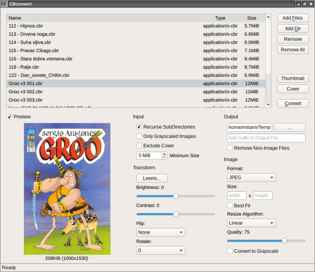

CBconvert is a Comic Book converter written in Go language .

Features
reads RAR, ZIP, 7Z, GZ, BZ2, CBR, CBZ, CB7, CBT, PDF, EPUB, XPS and plain directory
always saves processed comic in CBZ (ZIP) archive format
images can be converted to JPEG, PNG, GIF, TIFF or 4-Bit BMP (16 colors) file format
rotate, flip, adjust brightness/contrast, adjust levels (Photoshop like) or grayscale images
choose resize algorithm (NearestNeighbor, Box, Linear, MitchellNetravali, CatmullRom, Gaussian, Lanczos)
export covers from comics
create thumbnails from covers by freedesktop specification
Download
Source code
Source code is on GitHub . You can find compile instructions and command line usage there.
Video
VIDEO